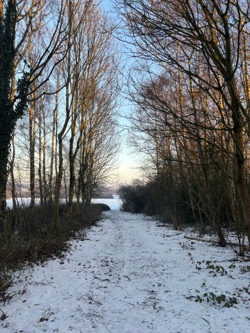

I used to run the exact same routine in January that I ran in July, and then wonder why the same habits that felt effortless in summer turned into something I had to force by December.
Years at the retreat had already taught me that the body keeps closer track of the sun than most of us give it credit for. Meals shifted with the light there. Sitting practice moved earlier as the mornings darkened. Nobody in that community would have kept the same schedule through the whole year and called it discipline. They would have called it not paying attention.
Back in ordinary life, with heated buildings and enough artificial light to erase the difference between a February afternoon and a June one, it got easy to forget any of that applies to me now. I kept the same wake time, the same workout, the same evening wind down, month after month, and started to feel depleted and sluggish without ever asking why.
The answer, once I went looking for it, was not complicated. My physical and mental needs were still shifting with the season. I had just stopped noticing, because nothing in my environment was forcing me to.
What changed things was not a new app or a stricter calendar. It was going back to something closer to how I lived at the retreat. Noticing the season first, then letting the routine follow it, instead of holding the routine still and letting the season bang against it.
Here is what that has actually looked like across a full year of paying attention, plus what the transitions themselves keep teaching me every single time they arrive.
What Actually Changes When The Season Turns
The light and the weather move first
The cooler air arrives before anything on my calendar tells me to expect it. The farmers market stalls swap corn and tomatoes for squash, spinach, and potatoes. The maples down the street start turning without asking permission. None of that is subtle if I am paying attention, but it is easy to miss entirely when most of my day happens inside buildings that hold the same sixty eight degrees in November as they do in July.
Daylight is the part that actually rearranges my schedule. As the days grow shorter, sunlight becomes something I have to plan for instead of something that is simply there. A morning walk stops being optional and starts being the only reliable way to get real light before the day gets away from me.
My body has its own calendar, not just my planner
My habit journal backs this up in a way that surprised me the first time I actually sat down and compared entries across years. Energy, mood, sleep, and appetite are not flat lines. Winter entries lean toward stillness and turning inward. Summer entries lean toward movement and reaching outward. That is not me being inconsistent. That is the actual pattern showing up in ink, year after year.
My Own Practice Through The Year
None of this stays theoretical for long once I try to live it. Four broad energies keep showing up once I lay a full year of entries side by side: grounding in fall, restoration in winter, renewal in early spring, and expansion in summer. Here is roughly how my own routine ends up shifting, broken down the way the seasons actually break for me.
Late summer sliding into fall
By late summer my body usually feels overstimulated from months of heat and activity, so this is where movement shifts first. High intensity workouts give way to walks and hikes in crisp air, slow flow yoga, and light resistance training. The goal here is not to push harder. It is to build something sustainable enough to carry me through winter.

Meal times, sleep, and the boundary between work and rest all loosen over summer without me ever deciding they should. Fall is when I reintroduce structure around them on purpose. My plate shifts too, away from raw salads and cold smoothies and toward roasted vegetables, soups, and stews. Root vegetables, squashes, and grains like barley and quinoa show up more often, and I lean on ginger, turmeric, and cinnamon to support digestion as the temperature drops.
Fall itself
Once fall settles in, consistency becomes the whole point. I commit to regular sessions rather than whatever feels good that day, and I pay closer attention to mobility, core stability, and joint health so stiffness does not creep in as it gets colder. Sleep gets protected too. Seven to nine hours a night, most nights, because this is also when cold and flu season starts and immune resilience matters. Yogurt, kefir, sauerkraut, and kimchi show up more in my kitchen for the same reason.
The shorter days can pull at something emotional too, a kind of low grade melancholy that has nothing to do with anything going wrong. I counter it with a gratitude journal, deliberate social contact even when it is just a phone call, and small comforting rituals like evening reading or candlelight meditation. I also declutter my space during this stretch. Letting go of what I do not need mirrors what the trees outside are already doing without any help from me.
Winter
Winter is where I stop treating exercise as performance and start treating it as maintenance. Pilates, gentle strength training, restorative yoga, and tai chi indoors, plus a short walk during whatever daylight hours I actually get, because that alone helps regulate mood and the body's internal clock.
Sleep gets longer here too, and I let it. Thirty to sixty extra minutes most nights, a bedtime I hold even on weekends, screens off an hour before I lie down, and a bedroom kept cool and dark enough to actually support the process. My wind down includes journaling, light stretching, and herbal teas like chamomile or lemon balm.
The low light is the part I take most seriously, since it is what tends to knock my mood down hardest. I spend time outside every day, especially in the morning, use a light therapy lamp on the darkest stretches, keep the blinds open, and set up my workspace near a window instead of against a wall. On the plate, this is the season for hearty soups and stews built on beans, lentils, and root vegetables, healthy fats from olive oil, avocado, and nuts, and proteins that carry iron and zinc. I keep bone broth and herbal tea in steady rotation and try not to lean on caffeine or sugar to push through a low afternoon.
Late winter tipping into spring
Even while winter still holds on, something starts to stir before I can name it. I resist the urge to leap into anything that resembles a spring detox and stick to gradual expansion instead. Morning walks, light stretching, and mobility work ease my body out of winter stillness a little at a time. I also use this stretch for mental and emotional clearing. Journaling, meditation, and mapping out intentions for the months ahead. Meals lighten gradually too, with fresh herbs, sprouts, and citrus finding their way back onto the plate.
What The Turn Of The Seasons Keeps Teaching Me
None of these transitions have ever gone smoothly the first time through, and I have stopped expecting them to. What I have actually learned has less to do with the routines themselves and more to do with how I hold them while they change.
Loosening the grip instead of letting go
My first instinct used to be forcing the old schedule to keep behaving the way it always had. That never worked. What works instead is keeping the bones of a practice while softening what I expect from it. If my sit usually runs an hour and a transition week only has room for fifteen minutes, fifteen minutes is the practice that week. If mornings stop working for a while, I move the sitting to whatever time of day actually holds it. The structure survives. The rigidity does not need to.
Small anchors when everything else is moving
When a whole season feels unsteady, I lean on small, fixed points rather than trying to hold the entire routine together at once. The same cup of tea before I sit. The same corner of the room. A brief check in with myself before I start, regardless of what the rest of the day looks like. None of these need to be grand. They just need to be repeatable enough to find again each morning.
Naming the shift instead of fighting it
There is a particular kind of frustration that shows up every single transition, a line worth admitting to myself out loud each time: I want to rage against the dying of the daylight. That line was never really about the weather. It is about resisting a change that was never going to ask my permission in the first place. Naming it that plainly does more for me than fighting it ever has. My system is responding to real shifts in light, temperature, and rhythm. It is not losing its way. It is finding a new balance, the same way it always eventually does.
Questions I Get About Changing A Routine With The Season
Where do I even start when a new season hits
Start with one piece of paper, not a plan for the entire year. Write down what is actually changing this season, the parts of your day that are genuinely different now, not the parts you assume should be different. Then pick one specific point in your day to build a routine around, just one, even if you can think of five. Work backward from that point, list every small task that has to happen before it, and then condense that list down to no more than three or four steps. A routine with more steps than that starts to feel regimented instead of automatic, and automatic is the entire point.
What if I do not have all the answers yet
You will not, and that part is fine. Build in some buffer time and expect a few deviations from whatever plan you sketched out. Watch what actually happens for the first week or two. Maybe breakfast takes longer than you assumed, or the walk you planned for morning only ever happens at lunch. That is not the plan failing. That is information you did not have until you tried it, and it is exactly what lets you refine the routine into one that actually fits.
How do I know if a shift I am feeling is normal or something more
A dip in energy or a stretch of low motivation as the light changes is common enough that I plan for it every year. What is worth paying closer attention to is sadness that does not lift, a loss of motivation that lingers well past the transition itself, or real difficulty functioning day to day. That is not something to push through alone. Seasonal Affective Disorder is a real, diagnosable pattern, and reaching out for professional support at that point makes a real difference.
Do I need to track anything to make this work
You do not need decades of paper journals the way I happen to have, but some form of tracking helps more than people expect. Even a few lines a day on energy, mood, sleep, and appetite is enough to start noticing your own pattern. Maybe you sleep longer in December, or do your clearest thinking in October. I have started treating each solstice and equinox as its own quarterly reset now, rather than waiting for a new year to reconsider anything. The season changes four times whether I plan around it or not. I would rather meet each one already turned in its direction than catch up to it three weeks late, the way I used to every single time.